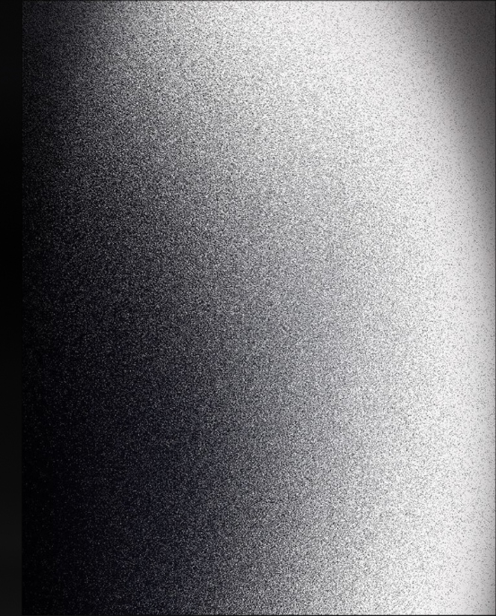

Where Deep Science
Meets Human Sovereignty.
SANA merges genomic diagnostic intelligence, decentralized treatment advocacy, and zero-latency patient relief funds into an uncompromising platform for human longevity.


 +48k
+48k
Welcome Back
Enter your sovereign credentials to access your portal

Engineered for Sovereign Longevity
Every layer of SANA is designed to eliminate friction between clinical breakthroughs and the human beings who urgently need them.
Predictive Biomarker & Multi-Omics Profiling
High-throughput sequencing analysis cross-referenced with global oncology registries, detecting disease signatures up to 18 months before clinical onset.
The Sovereign Health Vault
Your medical telemetry, clinical notes, and genomic records remain strictly encrypted on decentralized hardware. You hold the cryptographic keys.
Unconditional Patient Relief
Micro-grants deployed within 48 hours for lodging, specialized travel, and life-critical treatment subsidies.
Continuous Care Navigation & Open Trials
Connecting patients directly to leading oncologists, trial coordinators, and second-opinion panels without territorial gatekeeping or hospital bureaucracy.
Experience the SANA Terminal
Toggle between role perspectives to explore how SANA unifies patient records, clinical adjudication, and research pipelines in real time.
Memorial Sloan Clinical Partner Lab
Automated relief for specialized immunotherapy
Dr. Raymond Vance, MD (Confirmed)
Physicians on the SANA network bypass insurance claim friction. Subsidies and patient vouchers are backed by pre-funded endowment grants.
All clinical findings supported by Sana grants are published open-access with zero embargo periods.
The Interactive Wall of Hope
Every digital ribbon represents a warrior, survivor, caregiver, or memorial. Dedicate a beacon today and illuminate someone’s journey.
Enduring Impact, Real Lives
Hear from the patients who fought back and the clinicians who stand alongside them.
“When standard therapies hit a dead end, Sana coordinated an urgent genomic re-biopsy and covered our specialized travel in less than 48 hours. Today I am 14 months cancer-free.”

“Sana provides what the medical establishment often lacks: speed and human sovereignty. Their grant fund has enabled 38 of my highest-risk oncology patients to access life-saving clinical trials.”

“The dignity this foundation provides is irreplaceable. You are never an insurance case number; you are given a personal advocate who answers every midnight call with clarity and compassion.”

Frequently Asked Questions
Over 99.4% of every donated dollar goes directly to verified emergency treatment stipends, subsidized multi-omics genomic profiling, and independent open-source clinical research labs. Our comprehensive financials are independently audited every quarter and available publicly on our transparency portal.
Patients, caregivers, or hospital social workers can submit an expedited grant request via the Member Portal or through an accredited hospital partner. Applications are reviewed by our clinical board with decisions and fund disbursement completed within 48 to 72 business hours.
Members gain access to real-time clinical trial matching, their encrypted biomarker vault, direct messaging with a dedicated oncology nurse advocate, and access to second-opinion consultations from our global network of medical specialists.
All personal health telemetry is safeguarded by client-side zero-knowledge encryption. Sana never monetizes, licenses, or sells patient records. Decryption occurs strictly on your device or when explicitly shared with a treating physician of your choice.